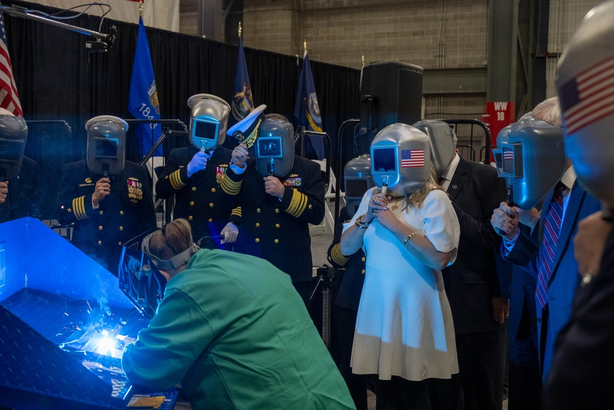

The Navy's nominee for its No. 2 civilian post told senators the service wants a new foreign-owned shipyard built in the United States specifically to produce small surface combatants, following the model already used for the Constellation-class frigate program
Pressed by Sen. Angus King (I-Maine) on whether he supports building U.S. warships in foreign-owned yards, the Navy's nominee for under secretary said yes, telling lawmakers Thursday that the service wants a new shipyard, owned and paid for by a foreign shipbuilder, dedicated to small surface combatants, according to USNI News. The approach mirrors the Navy's existing Constellation-class guided-missile frigate program, whose ships are being built by Fincantieri Marinette Marine — the Wisconsin-based U.S. subsidiary of the Italian shipbuilder Fincantieri — under a contract awarded in 2020. The Constellation class is intended to be the Navy's next-generation small surface combatant, succeeding the Freedom- and Independence-class littoral combat ships.